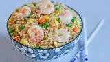

Shrimp Fried Rice

Description
Homemade shrimp fried rice with carrots, garlic, green onions, and peas.
Ingredients
- 2 tbsp sesame oil
- 2 tbsp olive oil
- 1 lb. uncooked medium shrimp, peeled and deveined
- 1 cup frozen peas and carrots
- 1/2 cup frozen corn
- 2 cloves garlic, finely minced (or more to taste)
- 3 large eggs, lightly beaten
- 4 cups cooked rice
- 3 tbsp thinly sliced green onions
- 3 tbsp soy sauce (or more to taste)
- 1/2 tsp salt (or to taste)
- 1/2 tsp freshly ground black pepper (or to taste)
Steps
- Cook shrimp in oil, remove from pan and set aside.
- Add frozen vegetables to the skillet and cook until they begin to soften.
- Add teh garlic and cook until fragrant, then push the veggies to one side of the skillet.
- Scramble the eggs on the other side.
- Stir the shrimp, rice, and green onions into the skillet.
- Stir in soy sauce and seasonings, then cook until the shrimp is reheated.